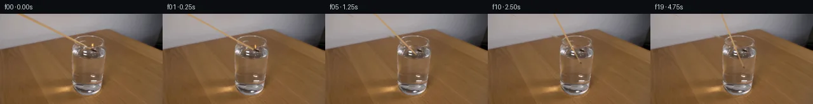

![首帧]()

Round 00
2026-11-05T11:59:26.853192+00:00像素候选变化代码 +257/−0inspection 更新
pixels 1562d8df14a0e3b5 · code ac3fee109215e98a
查看本轮 generate.py 真实 diff
--- previous/generate.py
+++ current/generate.py
@@ -0,0 +1,257 @@
+"""Local source-pixel continuation; no learned models or external rendering engines."""
+from pathlib import Path
+import json
+import base64
+import re
+import numpy as np
+import cv2
+from PIL import Image, ImageDraw
+from scipy.ndimage import map_coordinates, gaussian_filter
+from artifact_io import save
+
+ROOT = Path(__file__).resolve().parent
+TMP = ROOT / '.tmp'
+TMP.mkdir(exist_ok=True)
+W, H = 256, 144
+SOURCE = np.asarray(Image.open(ROOT / 'first_frame.png').convert('RGB'))
+Y, X = np.mgrid[:H, :W].astype(np.float64)
+SCALE = 4
+HY, HX = np.mgrid[:H*SCALE, :W*SCALE].astype(np.float64)
+HX = (HX + .5)/SCALE - .5
+HY = (HY + .5)/SCALE - .5
+HEAD_Y = np.array([56.2,57.5,59.3,61.6,64.,66.4,68.9,71.3,73.7,76.,78.1,80.,81.7,83.,84.,84.6,85.,85.1,85.1,85.1])
+ANGLES = np.array([25.95,29.,33.,37.,41.,45.,49.,53.,57.,60.,62.,64.,65.,66.,67.,67.5,68.,68.,68.,68.])
+HEAD_X = 144.2 + 1.6*np.sin(np.minimum(np.arange(20)/16.,1.)*np.pi/2.)**2
+
+# Reconstruct only the narrow initial shaft and its flame/head footprint.
+slope, intercept = .48673671, -15.10497907
+normal_distance = (Y - slope*X - intercept)/np.sqrt(1+slope*slope)
+original_shaft = (np.abs(normal_distance) < 2.08) & (X >= 26) & (X <= 144.2)
+original_flame = ((X-145.5)/3.1)**2 + ((Y-50.5)/4.5)**2 < 1.
+original_head = ((X-143.5)/2.9)**2 + ((Y-55.7)/2.55)**2 < 1.
+removal = original_shaft | original_flame | original_head
+CLEAN = cv2.inpaint(SOURCE, removal.astype(np.uint8)*255, 3, cv2.INPAINT_TELEA)
+CLEAN[~removal] = SOURCE[~removal]
+
+# Sample the input's wood grain and lighting along the match over the pale wall.
+source_s = np.arange(36.,100.,.25)
+source_y = slope*source_s + intercept
+WOOD = np.stack([map_coordinates(SOURCE[:,:,c].astype(float), [source_y+.22,source_s], order=1, mode='nearest') for c in range(3)],axis=-1)
+WOOD = gaussian_filter(WOOD, sigma=(.65,0))
+
+SURFACE = (((X-139.5)/23.5)**2+((Y-62.)/7.6)**2 < 1)
+INTERIOR = (X>116) & (X<162) & (Y>54) & (Y<114)
+# Preserve original bright neutral glass highlights over the submerged shaft.
+neutral = np.max(CLEAN.astype(float),axis=2)-np.min(CLEAN.astype(float),axis=2)
+luminance = CLEAN.astype(float).mean(axis=2)
+glass_glint = np.clip((luminance-145.)/85.,0.,.85)*np.clip((42.-neutral)/24.,0.,1.)*INTERIOR
+
+
+def reduce(array):
+ return array.reshape(H,SCALE,W,SCALE,*array.shape[2:]).mean(axis=(1,3))
+
+
+def composite_high(frame, rgb, alpha):
+ """Average premultiplied subpixel coverage, avoiding halo-colored edges."""
+ a = reduce(alpha)
+ p = reduce(rgb * alpha[:,:,None])
+ return frame*(1-a[:,:,None])+p
+
+
+def surface_disturbance(frame, number, entry_x):
+ if number < 3:
+ return frame, np.zeros((H,W))
+ age = (number-3)*.25
+ # A perspective-flattened wave follows the head's entry. Reflections are
+ # displaced locally; the ellipse clips all waves to the water surface.
+ wave_center_x = float(HEAD_X[3])
+ r = np.sqrt((X-wave_center_x)**2 + ((Y-62.)/0.30)**2 + 1e-8)
+ radius = 1.0 + 10.5*age
+ amplitude = .33*np.exp(-age/1.05)
+ wave = amplitude*np.exp(-((r-radius)/1.3)**2)
+ wave -= amplitude*.65*np.exp(-((r-radius-1.8)/1.2)**2)
+ # Continuing insertion gives only a very small local meniscus disturbance.
+ speed = HEAD_Y[number]-HEAD_Y[number-1]
+ local_r = np.sqrt((X-entry_x)**2 + ((Y-62.)/.32)**2 + 1e-8)
+ local = .055*min(speed/2.4,1.)*np.sin(local_r*1.5-number*.9)*np.exp(-local_r/6.)
+ field = (wave+local)*SURFACE
+ moved = np.stack([map_coordinates(frame[:,:,c], [Y+field, X+.16*field], order=1, mode='nearest') for c in range(3)],axis=2)
+ blend = (np.abs(field)>.001)*SURFACE
+ frame = np.where(blend[:,:,None],moved,frame)
+ frame += (wave*5.5)[:,:,None]*np.array([.86,.94,1.])[None,None,:]
+ return frame, field
+
+
+def shaft_and_head(frame, number):
+ theta = np.deg2rad(ANGLES[number])
+ tangent = np.array([np.cos(theta), np.sin(theta)])
… diff truncated; 170 more lines …